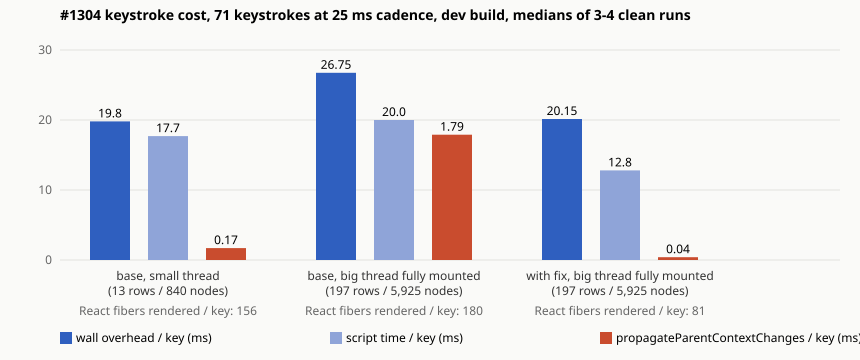
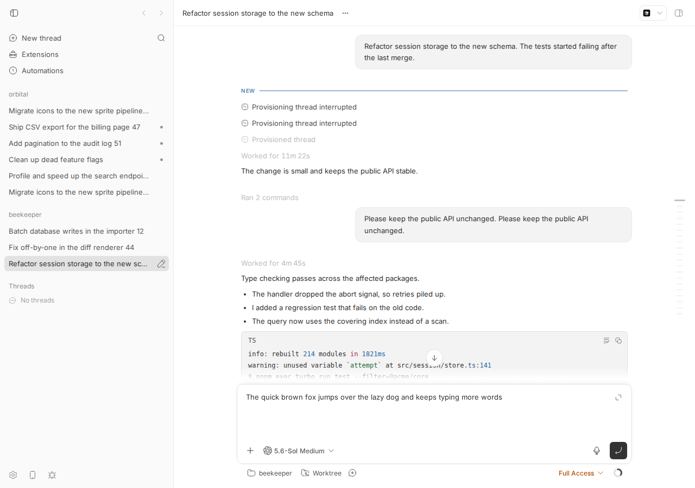

#1304 · Composer keystroke cost scales with the mounted timeline size
TL;DR
What the user sees. On a thread whose history has been scrolled into view (a few hundred timeline rows mounted), every character typed into the bottom composer costs noticeably more main-thread time than on a short thread. Typing 71 characters at a 25 ms cadence into a fully mounted 2,304-event seeded thread (197 rows, ~5.9k DOM nodes) took a median of 26.8 ms of overhead per keystroke versus 19.8 ms on a 13-row thread on the same dev build (the issue reported ~19 ms/key on a 2.6k-event thread).
What is actually wrong. Two things in ThreadDetailViewInternal (the ~3,000-line component that hosts the whole thread page: header, timeline, side panel and composer):
- It subscribes to the composer draft store with
usePromptDraftStorage(threadScope)although it only usesaddQuote(a stable callback) andstorageKey. That hook is auseSyncExternalStoresubscription; the composer writes the draft on every keystroke (setTextAndMentions), so the entire thread view re-renders once per keystroke (verified: 142 renders for 71 keystrokes under StrictMode = 1 real render per keystroke; 0 with the fix). - On each of those renders it rebuilds
threadOpenContextviaresolveEnvironmentOpenContext(a fresh{ kind: "local" }object) and passes it touseLocalOpenTargets, whose memo chain is keyed on the object's identity, soopenPathInFileTargetis a new function every render; that is a dependency ofgetLocalFileContextMenuItems, which is the value ofMarkdownLocalFileContextMenuContext.Providerwrapped around the whole timeline. A changed context value forces React to walk the provider's entire subtree looking for consumers on every keystroke: 1,535 fibers on the small thread, 17,943 fibers on the fully mounted big thread. That walk (propagateParentContextChanges) is what makes the per-keystroke cost scale with the mounted timeline (0.17 ms/key -> 1.8 ms/key of pure React self time), on top of the render of the un-memoized ancestors (ThreadTimelineSurface,ThreadDetailSecondaryContentBody,ThreadTimelinePane, ...) which is size independent.
Why the fix is small. Stop subscribing (use getPromptDraftAccessor, extended with addQuote/storageKey) and memoize the open context structurally in useLocalOpenTargets. With that 54-line diff, per-keystroke re-rendering of the thread view disappears (rendered React fibers per keystroke 180 -> 81, propagateParentContextChanges 127 ms -> 3 ms per 71 keystrokes, script time 20.0 -> 12.8 ms/key on the big thread) and the big thread types as fast as the small one (median 20.2 vs 19.8 ms/key overhead). The timeline rows themselves are already memoized (they did not re-render in any run); the remaining ~20 ms/key is composer-local (PromptBox/ProseMirror, plugin composer providers, dev-mode jsxDEV) and out of scope here.
Claims vs findings
| Claim (issue) | Status | Evidence |
|---|---|---|
| Typing cost has ~19 ms/keystroke main-thread overhead on a fully loaded 2.6k-event thread | Verified (order of magnitude) | Median 26.8 ms/key wall overhead on a fully mounted 2,304-event thread vs 19.8 ms/key on a 13-row thread, dev build, headless Chromium, 71 keys @ 25 ms (all runs). Absolute values are machine dependent and noisy (shared box); the deltas and the deterministic counters are not. |
| Cost scales with the mounted timeline size (a "re-render amplifier" survives #1269/#1285) | Verified | ThreadDetailViewInternal and its non-memoized descendants (ThreadDetailSecondaryContentBody, ThreadTimelinePane, ThreadTimelineSurface, EmbeddedThreadChatHostedFooter) render once per keystroke regardless of thread size; on top, a context value that wraps the timeline changes per keystroke, so React scans 1.5k (small) vs 17.9k (big) fibers per keystroke (propagateParentContextChanges 12 ms vs 127 ms per 71 keys). Rendered fibers per key: 156 (small) vs 180 (big); with the fix 81. |
| A ~94 ms long task mid-sentence | Partially | Long tasks of 122 ms (hooked base-big run), 59 ms (base-big-clean3), 64/54 ms (base-small-clean2) appeared sporadically; none in any of the fixed runs. Sporadic on this shared machine, so not attributed with confidence. |
| (implicit) Timeline rows re-render per keystroke | Refuted | TimelineRowView/TimelineExpandableRowView probes stayed at 0 in every run. The rows are memoized; the cost is the ancestors' renders + the context-consumer scan over the row subtree, not row renders. |
| Suggested approach: isolate composer draft state from the timeline tree | Confirmed as the right direction | The draft state is already isolated in the composer's own components; the leak is ThreadDetailViewInternal's unnecessary draft subscription. Fixing that plus the context-value identity removes the timeline-size dependence. |
Environment
- bb
16ceb3a54(main, 2026-08-18), worktree/home/sawyer/projects/bb/.claude/worktrees/wf_570fde41-63f-2; dev instance fromscripts/bb-dev-app current: app:16950, server:24950, host daemon:32950, data dir/home/sawyer/.bb-dev/projects-bb-.claude-worktrees-wf_570fde41-63f-2-2b1f84feebda(deleted at cleanup). - Linux 7.0.0-29-generic, node v24.18.0, Vite dev build (React StrictMode on, so every component render function is invoked twice; the counters below read "142 for 71 keys" = 1 real render per key). Headless Chromium via
dev-browser, viewport 1280x900, CDP CPU profiler at 200 us sampling. - Seed:
pnpm seed:perf -- --projects 2 --threads 100 --events 60000(60,166 events). Big threadthr_e5upw3jres(projectproj_rgsz9s6cf9, 2,304 events, 197 rows / 5,925 DOM nodes when fully mounted); small threadthr_in7agg4344(projectproj_n2izyamrfz, 77 events, 13 rows / 840 nodes as initially rendered). Seeded threads contain no markdown links, so the context scan finds zero consumers; the scan itself is the cost. - No providers were run (typing only; no turns sent).
Minimal reproduction
A. Unit-level (fails on main, passes with the fix)
File: 1304/repro/threadDetailView.keystroke-rerender.repro.test.tsx (copy to apps/app/src/views/thread-detail/). It models the two mechanisms at the hook level with the exact composition ThreadDetailView uses.
$ cd apps/app && pnpm exec vitest run src/views/thread-detail/threadDetailView.keystroke-rerender.repro.test.tsx
Expected: 2 passed. Actual on 16ceb3a54 (log):
x a view that only needs addQuote must not re-render on every composer keystroke
TypeError: accessor.addQuote is not a function
(the subscribed view had re-rendered 19 times for 19 keystrokes - asserted toBe(19) passes - but the non-subscribing alternative does not exist yet)
x threadOpenContext -> useLocalOpenTargets must yield a stable openPathInFileTarget across renders
AssertionError: expected [AsyncFunction] to be [AsyncFunction] // Object.is equality
Tests 2 failed (2)
With fix.diff applied (log): Tests 22 passed (22) (this file + usePromptDraftStorage.test.tsx + threadWorkspaceOpenPath.test.ts). Caveat: this test pins the mechanism (a draft-store subscriber re-renders per keystroke; the open-context memo is identity keyed), not ThreadDetailView itself, which the app test suite only renders mocked.
// @vitest-environment jsdom
//
// Repro for get-bb/bb#1304 ("Composer keystroke cost scales with the mounted
// timeline size"). Both tests model, at the hook level, the exact composition
// ThreadDetailViewInternal uses (apps/app/src/views/thread-detail/ThreadDetailView.tsx):
//
// (1) It calls `usePromptDraftStorage(threadScope)` but only reads the stable
// `addQuote` / `storageKey` members. `usePromptDraftStorage` is a
// `useSyncExternalStore` subscription, so every keystroke the composer
// writes with `setTextAndMentions` re-renders the whole ~3k-line view.
// (2) On every one of those renders it calls `resolveEnvironmentOpenContext`
// (a fresh `{ kind: "local" }` object) and feeds it to `useLocalOpenTargets`,
// whose `openPathInFileTarget` callback therefore changes identity every
// render; that callback is a dependency of `getLocalFileContextMenuItems`,
// which is the value of `MarkdownLocalFileContextMenuContext.Provider`
// wrapped around the entire timeline. React then has to scan the whole
// timeline subtree (~18k fibers for a fully mounted 2.3k-event thread)
// for context consumers on every keystroke.
//
// On main (16ceb3a54) both tests FAIL. With the fix in
// /tmp/bb-reports/issues/1304/repro/fix.diff (getPromptDraftAccessor.addQuote used
// by ThreadDetailView; structural memo of openContext in useLocalOpenTargets)
// both pass.
import { act, cleanup, render, renderHook } from "@testing-library/react";
import { afterEach, beforeEach, describe, expect, it } from "vitest";
import type { Environment } from "@bb/domain";
import {
getPromptDraftAccessor,
usePromptDraftStorage,
} from "@/hooks/usePromptDraftStorage";
import { useLocalOpenTargets } from "@/hooks/useLocalOpenTargets";
import { resolveEnvironmentOpenContext } from "./threadWorkspaceOpenPath";
const scope = {
kind: "thread" as const,
projectId: "proj-1304",
threadId: "thr-1304",
};
beforeEach(() => {
window.localStorage.clear();
});
afterEach(() => {
cleanup();
});
describe("#1304 composer keystrokes re-render the thread view", () => {
it("a view that only needs addQuote must not re-render on every composer keystroke", () => {
let subscribedRenders = 0;
let accessorRenders = 0;
// What ThreadDetailViewInternal does on main: subscribes to the draft
// store, but only uses `addQuote` (a stable callback) and `storageKey`.
function SubscribedViewLike() {
subscribedRenders += 1;
const selectionPromptDraft = usePromptDraftStorage(scope);
void selectionPromptDraft.addQuote;
void selectionPromptDraft.storageKey;
return null;
}
// What it should do: event-time access without a subscription. On main
// `getPromptDraftAccessor` has no `addQuote`, so this view cannot be
// written this way yet (the assertion below throws a TypeError).
let accessor: ReturnType<typeof getPromptDraftAccessor> | null = null;
function AccessorViewLike() {
accessorRenders += 1;
accessor = getPromptDraftAccessor(scope);
return null;
}
render(
<>
<SubscribedViewLike />
<AccessorViewLike />
</>,
);
const subscribedBefore = subscribedRenders;
const accessorBefore = accessorRenders;
// The composer's per-keystroke write path (PromptBox -> setTextAndMentions).
const composer = renderHook(() => usePromptDraftStorage(scope));
const typed = "The quick brown fox";
for (let index = 1; index <= typed.length; index += 1) {
act(() => {
composer.result.current.setTextAndMentions(typed.slice(0, index), []);
});
}
// Sanity: the draft store itself works.
expect(getPromptDraftAccessor(scope).getCurrent().text).toBe(typed);
// The amplifier, by construction: one extra render of the subscribed view
// per keystroke (this is what ThreadDetailViewInternal pays on main).
expect(subscribedRenders - subscribedBefore).toBe(typed.length);
// The accessor-based view renders zero extra times...
expect(accessorRenders - accessorBefore).toBe(0);
// ...and can still perform the only draft mutation the thread view needs.
// FAILS on main: `accessor.addQuote is not a function`.
act(() => {
(accessor as unknown as { addQuote: (text: string) => void }).addQuote(
"quoted selection",
);
});
expect(getPromptDraftAccessor(scope).getCurrent().text).toContain(
"> quoted selection",
);
});
it("threadOpenContext -> useLocalOpenTargets must yield a stable openPathInFileTarget across renders", () => {
const environment: Environment = {
baseBranch: null,
branchName: "main",
createdAt: 1,
defaultBranch: "main",
hostId: "host_local",
id: "env-1304",
name: null,
isGitRepo: true,
isWorktree: false,
managed: false,
mergeBaseBranch: null,
path: "/tmp/repo",
projectId: "proj-1304",
status: "ready",
updatedAt: 1,
workspaceProvisionType: "personal",
};
// Exactly what ThreadDetailViewInternal does on every render (l.1874-1892).
const { result, rerender } = renderHook(() => {
const threadOpenContext = resolveEnvironmentOpenContext({
environment,
serverOrigin: "http://localhost",
threadEnvironmentIsLocal: true,
});
return useLocalOpenTargets({
enabled: threadOpenContext !== null,
...(threadOpenContext ? { openContext: threadOpenContext } : {}),
});
});
const first = result.current.openPathInFileTarget;
rerender();
const second = result.current.openPathInFileTarget;
// BUG on main: a fresh `{ kind: "local" }` object per render busts the
// memo chain in useLocalOpenTargets, so this callback (and with it the
// MarkdownLocalFileContextMenuContext value) changes identity every render.
expect(second).toBe(first);
});
});
B. In the app (deterministic counters + timings)
- Build and start your dev instance:
pnpm install --frozen-lockfile --prefer-offline && pnpm exec turbo run build && scripts/bb-dev-app current. Note the App URL and Data dir. - Seed:
pnpm seed:perf -- --projects 2 --threads 100 --events 60000. Pick a big non-archived thread:sqlite3 "<Data dir>/bb.db" "select t.id,t.project_id,count(*) c from threads t join events e on e.thread_id=t.id where t.archived_at is null group by t.id order by c desc limit 1"and a small one (order by c asc). Archived threads have no composer. - Optional, makes the render counters visible: copy render-probe.ts to
apps/app/src/lib/and apply instrumentation.diff (adds onerenderProbe("Name")line to 8 components; the Vite dev server hot-reloads). - Run run-all.sh (needs
dev-browseron PATH; it drives db-all.js):$ /tmp/bb-reports/issues/1304/repro/run-all.sh base-small http://localhost:<app>/projects/<proj>/threads/<small thr> false $ /tmp/bb-reports/issues/1304/repro/run-all.sh base-big http://localhost:<app>/projects/<proj>/threads/<big thr> true # true = scroll to top until all rows are mounted $ # timing-only variants without the fiber-walking hook (its own overhead is ~5 ms/key on the big thread): $ /tmp/bb-reports/issues/1304/repro/run-all.sh base-big-clean <url> true false
Expected: per-keystroke work independent of how much timeline is mounted; only composer components render. Actual (verbatim summary lines printed by run-all.sh):
1304-all-base-small.json {'rows': 13, 'nodes': 838} commits 142 rendered/key 156 cpu/key 25.2 overhead/key 20.1 long []
named: {'propagateParentContextChanges': 14.7, 'ThreadDetailViewInternal': 8.9, 'PromptBoxInternal': 5.2, 'ThreadDetailPromptArea': 4.5, 'caretPositionFromPoint': 5.9}
probes: {'ThreadDetailViewInternal': 142, 'ThreadDetailSecondaryContentBody': 284, 'ThreadTimelinePane': 142, 'EmbeddedThreadChatHostedFooter': 142, 'ThreadTimelineSurface': 142, 'ThreadDetailPromptArea': 142, 'PromptBoxInternal': 284}
providers: [('Provider under PluginThreadPanelNavigationProvider < ThreadDetailViewInternal < ThreadDetailView', 71, 1535), ('Provider under Dialog < ThreadGitActionDialog < UrlOpenRoutingProvider', 71, 9), ('Provider under PluginComposerViewProvider < FollowUpPromptBoxWithComposer < FollowUpPromptBox', 71, 256), ('Provider under PluginComposerHostProvider < PluginComposerViewProvider < FollowUpPromptBoxWithComposer', 71, 254), ('Provider under PluginComposerViewProvider < PromptBoxInternal < PromptBoxWithScrollAnchor', 71, 94)]
1304-all-base-big.json {'rows': 197, 'nodes': 5924} commits 142 rendered/key 180.1 cpu/key 38.7 overhead/key 32.1 long [122]
named: {'ThreadDetailViewInternal': 7.8, 'propagateParentContextChanges': 132.9, 'caretPositionFromPoint': 21.6, 'ThreadDetailPromptArea': 4.7, 'PromptBoxInternal': 3.4}
probes: {'ThreadDetailViewInternal': 142, 'ThreadDetailSecondaryContentBody': 284, 'ThreadTimelinePane': 142, 'EmbeddedThreadChatHostedFooter': 142, 'ThreadTimelineSurface': 142, 'ThreadDetailPromptArea': 142, 'PromptBoxInternal': 284}
providers: [('Provider under PluginThreadPanelNavigationProvider < ThreadDetailViewInternal < ThreadDetailView', 71, 17943), ('Provider under Dialog < ThreadGitActionDialog < UrlOpenRoutingProvider', 71, 9), ('Provider under PluginComposerViewProvider < FollowUpPromptBoxWithComposer < FollowUpPromptBox', 71, 272), ('Provider under PluginComposerHostProvider < PluginComposerViewProvider < FollowUpPromptBoxWithComposer', 71, 270), ('Provider under PluginComposerViewProvider < PromptBoxInternal < PromptBoxWithScrollAnchor', 71, 94), ...]
1304-all-fixfinal-big.json {'rows': 197, 'nodes': 5925} commits 143 rendered/key 81 cpu/key 29.7 overhead/key 24.8 long []
named: {'caretPositionFromPoint': 23.7, 'ThreadDetailPromptArea': 3.7, 'propagateParentContextChanges': 4.2, 'PromptBoxInternal': 1}
probes: {'ThreadDetailPromptArea': 142, 'PromptBoxInternal': 284, 'ThreadDetailSecondaryContentBody': 142}
providers: [('Provider under PluginComposerViewProvider < FollowUpPromptBoxWithComposer < FollowUpPromptBox', 71, 272), ('Provider under PluginComposerHostProvider < PluginComposerViewProvider < FollowUpPromptBoxWithComposer', 71, 270), ('Provider under PluginComposerViewProvider < PromptBoxInternal < PromptBoxWithScrollAnchor', 71, 94)]
Reading the counters: "probes: ThreadDetailViewInternal 142" = the whole thread view rendered once per keystroke (x2 StrictMode). "providers: ... 71, 17943" = a context provider directly under ThreadDetailViewInternal's PluginThreadPanelNavigationProvider got a new value on all 71 keystrokes and React had to scan a 17,943-fiber subtree for consumers each time. After the fix that provider never changes and the view never renders; only the composer's own providers (subtree <= 272 fibers) still change per keystroke, which is expected since they carry the draft.

propagateParentContextChanges self time per keystroke (x10 for visibility). Rendered-fibers-per-key are from the hooked runs.
Which dependency churns (probe patched into ThreadDetailView by apply-depprobe.py, driven by run-depprobe.sh; output 1304-depprobe.out), 25 keystrokes on the small thread:
# base (16ceb3a54 + probes), small thread thr_in7agg4344, 25 keystrokes (StrictMode dev => 2 renders per keystroke):
{"dep":{"threadOpenContext":50,"openPathInFileTarget":50,"getLocalFileContextMenuItems":50},"renders":{"ThreadDetailViewInternal":50,"ThreadDetailSecondaryContentBody":100,"ThreadTimelinePane":50,"EmbeddedThreadChatHostedFooter":50,"ThreadTimelineSurface":50,"ThreadDetailPromptArea":50,"PromptBoxInternal":100}}
# with fix.diff applied, same thread, same 25 keystrokes:
{"dep":{},"renders":{"ThreadDetailPromptArea":50,"PromptBoxInternal":100,"ThreadDetailSecondaryContentBody":50}}
Only threadOpenContext, openPathInFileTarget and getLocalFileContextMenuItems change identity, exactly once per render; fileOpenTargets, pluginFileOpeners, handleOpenTimelineLocalFileLink are stable.
All measurement runs
| run | rows | DOM nodes | fiber hook | overhead ms/key | CPU busy ms/key | ScriptDuration ms (71 keys) | propagateParentContextChanges self ms | rendered fibers/key | ThreadDetailViewInternal renders | long tasks ms |
|---|---|---|---|---|---|---|---|---|---|---|
| base-big-clean | 197 | 5925 | no | 23.5 | 30.3 | - | 119.1 | - | 142 | - |
| base-big-clean2 | 197 | 5925 | no | 27.3 | 31.5 | 1419 | 136.6 | - | 142 | - |
| base-big-clean3 | 197 | 5925 | no | 32.9 | 34.6 | 1604 | 135.2 | - | 142 | 59 |
| base-big-clean4 | 197 | 5925 | no | 26.2 | 31.9 | 1360 | 114.6 | - | 142 | - |
| base-big | 197 | 5924 | yes | 32.1 | 38.7 | - | 132.9 | 180.1 | 142 | 122 |
| base-small-clean | 13 | 840 | no | 18.7 | 24.2 | - | 10.4 | - | 142 | - |
| base-small-clean2 | 13 | 840 | no | 25.8 | 29.4 | 1433 | 15 | - | 142 | 64,54 |
| base-small-clean3 | 13 | 840 | no | 19.8 | 23.8 | 1078 | 11.9 | - | 142 | - |
| base-small | 13 | 838 | yes | 20.1 | 25.2 | - | 14.7 | 156 | 142 | - |
| fix-big-clean | 197 | 5925 | no | 20.2 | 25.4 | 939 | 4.9 | - | 0 | - |
| fix-big-clean2 | 197 | 5925 | no | 18.5 | 23.7 | 854 | 3.6 | - | 0 | - |
| fix-big-clean3 | 197 | 5925 | no | 20.1 | 24.9 | 880 | 2.3 | - | 0 | - |
| fix-big | 197 | 5925 | yes | 26.7 | 31.9 | 1373 | 4.2 | 81 | 0 | - |
| fix-small-clean | 13 | 840 | no | 23.1 | 27.4 | 1063 | 3.6 | - | 0 | - |
| fixfinal-big-clean | 197 | 5925 | no | 20.4 | 25.4 | 974 | 2.6 | - | 0 | - |
| fixfinal-big | 197 | 5925 | yes | 24.8 | 29.7 | 1257 | 4.2 | 81 | 0 | - |
"fix-*" runs used an earlier variant of part B (memoizing threadOpenContext in ThreadDetailView); "fixfinal-*" is the diff shipped below (memo inside useLocalOpenTargets). Same effect. Wall/CPU numbers vary +-5 ms between runs because the machine hosts other agents; the counters (renders, changed providers, subtree sizes) and the propagateParentContextChanges self time are the reliable signals. The first two "clean" runs predate the ScriptDuration column.
Root cause
1. The thread view subscribes to the draft store it never renders
ThreadDetailView.tsx L960-970:
// Same scope (`projectId` + `thread.id`) the composer's `ThreadDetailPromptArea`
// uses, so the timeline "Add to chat" action and the composer share one
// localStorage-backed draft ...
const selectionPromptDraft = usePromptDraftStorage({
kind: "thread",
projectId: thread?.projectId ?? projectId ?? "",
threadId: thread?.id ?? "",
});
const addQuoteToComposer = selectionPromptDraft.addQuote;
The only other use is selectionPromptDraft.storageKey (L1148). usePromptDraftStorage is a useSyncExternalStore over the module-level draft store; the doc comment on getPromptDraftAccessor already warns: "usePromptDraftStorage is a useSyncExternalStore subscription, so it re-renders its caller on every keystroke a mounted composer writes - pure waste when the caller never renders the draft." The composer writes on every keystroke: ThreadDetailPromptArea L976 onChangeMessage: promptDraft.setTextAndMentions -> writePromptDraft -> emitPromptDraftChange -> every subscriber, including the 3k-line view. So one keystroke = one full render of ThreadDetailViewInternal: hundreds of hooks, a huge JSX tree (dev-mode jsxDEV is the top self-time frame in every profile), and every non-memoized child (ThreadDetailSecondaryContentBody, ThreadTimelinePane, ThreadTimelineSurface, EmbeddedThreadChatHostedFooter all render 1x/key in the probes). Introduced with the "Add to chat" quote action in a6bec2089 (#498).
2. Each of those renders changes a context value that wraps the whole timeline
ThreadDetailView.tsx L1874-1892 builds the open context every render and hands it to useLocalOpenTargets:
const threadOpenContext = resolveEnvironmentOpenContext({ // returns a fresh { kind: "local" } (or remote-ssh) object
environment,
serverOrigin: window.location.origin,
threadEnvironmentIsLocal,
});
const { ..., fileOpenTargets, openPathInFileTarget, ... } = useLocalOpenTargets({
enabled: threadOpenContext !== null,
...(threadOpenContext ? { openContext: threadOpenContext } : {}),
});
useLocalOpenTargets.ts L214-217 memoizes on identity: useMemo(() => args.openContext ?? { kind: "local" }, [args.openContext]), and openContext is a dep of openPathInAvailableTarget -> openPathInFileTarget. That callback is a dep of getLocalFileContextMenuItems (deps [fileOpenTargets, handleOpenTimelineLocalFileLink, openPathInFileTarget, pluginFileOpeners]), which is rendered as the value of MarkdownLocalFileContextMenuContext.Provider around ThreadDetailSecondaryContent (timeline + side panel) and again inside renderHostedPanel. The consumer is MarkdownAnchor, i.e. every markdown link in every rendered message.
React's contract for a changed context value: it must find all consumers under the provider, and it does so by walking the provider's whole fiber subtree (propagateParentContextChanges/propagateContextChanges), memo boundaries notwithstanding. That walk is O(mounted timeline): 1,535 fibers on the 13-row thread, 17,943 fibers on the 197-row thread, once per keystroke, and it is the biggest single React frame in the big-thread profiles (115-137 ms self time per 71 keys, versus 10-15 ms on the small thread and 2-5 ms with the fix). If the messages contain local file links, every one of those MarkdownAnchors additionally re-renders per keystroke (the seed corpus has none, so this run shows the floor).
Deeper issue. Both problems are instances of one pattern: ThreadDetailViewInternal is a very large component that owns state for unrelated concerns, so any subscription it holds re-runs everything under it and any un-memoized derived value it publishes via context invalidates the whole subtree. The size scaling in the issue title is specifically the context-propagation scan; the fixed per-keystroke tax (render of the view + non-memoized ancestors) is size independent but is what the subscription buys for nothing. Both go away together.
Proposed fix (first principles)
Diff: 1304/repro/fix.diff (applies to 16ceb3a54; 3 files, +54/-8; turbo typecheck --filter=@bb/app passes; app hooks + thread-detail + plugin composer test suites pass: 66 files / 427 tests + 12). Applied by apply-fix.py, reverted by revert-fix.py. Left applied in the worktree together with the repro test.
- Part A -
usePromptDraftStorage.ts: givegetPromptDraftAccessorthe two members the view needs (storageKey,addQuote) using the sameappendQuoteAndAttachmentsToDraftpath;ThreadDetailView.tsx: replaceusePromptDraftStorage(...)withuseMemo(() => getPromptDraftAccessor(...), [projectId, threadId]). "Add to chat" behavior is unchanged (the accessor writes to the same store; the composer, which does subscribe, re-renders and shows the quote). Cleaner follow-up: dedupeaddQuoteby having the hook delegate to the accessor. - Part B -
useLocalOpenTargets.ts: memoizeopenContexton its fields (kind,hostId,serverOrigin) rather than on object identity, so any caller can rebuild an equal context per render without churning the callbacks. (Alternative: memoizethreadOpenContextin ThreadDetailView on[environment, threadEnvironmentIsLocal]; measured both, same result. The hook-side fix is more robust and is what the repro test checks.)
Part A alone removes the keystroke-triggered render (and therefore the context churn on keystrokes); part B alone would still leave the view rendering per keystroke. Part B additionally protects every other reason the view renders (timeline events streaming in, query refetches, resize) from re-scanning the timeline subtree, so it should ship too. Risk: none observable; the only semantic change is that the thread view no longer re-renders when the draft changes, and nothing in it reads the draft (grep: only addQuote and storageKey). A guard test that renders the real ThreadDetailView would be better than the hook-level test, but the app suite currently only renders it mocked.
Beyond this issue, the remaining ~20 ms/key on the dev build is composer-local (two PromptBoxInternal renders per keystroke, the plugin composer providers PluginComposerViewProvider/PluginComposerHostProvider republishing the draft to a ~270-fiber subtree, ProseMirror caretPositionFromPoint) plus dev-only element-creation cost; measure on a production build before optimizing that.
diff --git a/apps/app/src/hooks/useLocalOpenTargets.ts b/apps/app/src/hooks/useLocalOpenTargets.ts
index ba573bd1c..1481e97c0 100644
--- a/apps/app/src/hooks/useLocalOpenTargets.ts
+++ b/apps/app/src/hooks/useLocalOpenTargets.ts
@@ -211,9 +211,29 @@ function useOpenTargetResolution(
export function useLocalOpenTargets(
args: UseLocalOpenTargetsArgs,
): UseLocalOpenTargetsResult {
+ // FIX (#1304 part B): memoize structurally. Callers (ThreadDetailView)
+ // rebuild an equal context object on every render; keying on identity made
+ // every callback below — and the timeline-wide context value built from
+ // them — change identity per render.
+ const openContextKind = args.openContext?.kind ?? "local";
+ const openContextHostId =
+ args.openContext?.kind === "remote-ssh" ? args.openContext.hostId : null;
+ const openContextServerOrigin =
+ args.openContext?.kind === "remote-ssh"
+ ? args.openContext.serverOrigin
+ : null;
const openContext = useMemo<OpenInTargetContext>(
- () => args.openContext ?? { kind: "local" },
- [args.openContext],
+ () =>
+ openContextKind === "remote-ssh" &&
+ openContextHostId !== null &&
+ openContextServerOrigin !== null
+ ? {
+ kind: "remote-ssh",
+ hostId: openContextHostId,
+ serverOrigin: openContextServerOrigin,
+ }
+ : { kind: "local" },
+ [openContextHostId, openContextKind, openContextServerOrigin],
);
const contextKind = openContext.kind;
const { hasDaemon } = useHostDaemon();
diff --git a/apps/app/src/hooks/usePromptDraftStorage.ts b/apps/app/src/hooks/usePromptDraftStorage.ts
index a040f7da2..33073d107 100644
--- a/apps/app/src/hooks/usePromptDraftStorage.ts
+++ b/apps/app/src/hooks/usePromptDraftStorage.ts
@@ -251,13 +251,30 @@ function getPromptDraftStorageKey(scope: PromptDraftScope): string {
* renders the draft.
*/
export function getPromptDraftAccessor(scope: PromptDraftScope): {
+ storageKey: string;
getCurrent: () => PromptDraftState;
setDraft: (draft: PromptDraftState) => void;
+ addQuote: (
+ text: string,
+ attachments?: readonly PromptDraftAttachment[],
+ ) => void;
} {
const storageKey = getPromptDraftStorageKey(scope);
return {
+ storageKey,
getCurrent: () => readPromptDraft(storageKey),
setDraft: (draft) => writePromptDraft(storageKey, draft),
+ addQuote: (text, attachments = []) => {
+ const currentDraft = readPromptDraft(storageKey);
+ const nextDraft = appendQuoteAndAttachmentsToDraft(
+ currentDraft,
+ text,
+ attachments,
+ );
+ // Whitespace-only text with no new attachments is a no-op.
+ if (nextDraft === currentDraft) return;
+ writePromptDraft(storageKey, nextDraft);
+ },
};
}
diff --git a/apps/app/src/views/thread-detail/ThreadDetailView.tsx b/apps/app/src/views/thread-detail/ThreadDetailView.tsx
index a2a4724bd..8893b677f 100644
--- a/apps/app/src/views/thread-detail/ThreadDetailView.tsx
+++ b/apps/app/src/views/thread-detail/ThreadDetailView.tsx
@@ -74,7 +74,7 @@ import {
type ProjectThreadSubsetFilters,
} from "../../hooks/queries/thread-queries";
import { isTransientReadError } from "@/hooks/queries/query-helpers";
-import { usePromptDraftStorage } from "@/hooks/usePromptDraftStorage";
+import { getPromptDraftAccessor } from "@/hooks/usePromptDraftStorage";
import { subscribeComposerFocusRequests } from "@/lib/composer-focus-requests";
import { ThreadGitActionDialog } from "@/components/dialogs/ThreadGitActionDialog";
import { PageShell } from "@/components/ui/page-shell.js";
@@ -962,11 +962,20 @@ function ThreadDetailViewInternal(props: ThreadDetailViewInternalProps) {
// localStorage-backed draft — the quoted text is appended to the draft as a
// `> ` blockquote block and renders inline in the composer immediately, with
// no duplicated draft state.
- const selectionPromptDraft = usePromptDraftStorage({
- kind: "thread",
- projectId: thread?.projectId ?? projectId ?? "",
- threadId: thread?.id ?? "",
- });
+ // FIX (#1304 part A): this view never renders the draft; it only needs
+ // event-time access (addQuote) and the storage key. Subscribing via
+ // usePromptDraftStorage re-rendered the whole thread view on every keystroke.
+ const selectionPromptDraftProjectId = thread?.projectId ?? projectId ?? "";
+ const selectionPromptDraftThreadId = thread?.id ?? "";
+ const selectionPromptDraft = useMemo(
+ () =>
+ getPromptDraftAccessor({
+ kind: "thread",
+ projectId: selectionPromptDraftProjectId,
+ threadId: selectionPromptDraftThreadId,
+ }),
+ [selectionPromptDraftProjectId, selectionPromptDraftThreadId],
+ );
const addQuoteToComposer = selectionPromptDraft.addQuote;
// Desktop quote actions keep their existing focus handoff. Mobile web does
// not focus inputs programmatically; see PromptBoxInternal.
Related issues
- #1300 (seed:perf fixture used here), #1269 / #1285 (tap-freeze work this is a follow-up to), the timeline-virtualization issue referenced by the report (virtualization would shrink the scanned subtree, but the fix above removes the per-keystroke scan altogether).
- #498 (
a6bec2089) introduced theusePromptDraftStoragecall in ThreadDetailView for the "Add to chat" quote action.
Appendix
Top self-time frames, base big vs fixed big (hook-less runs)
base-big-clean2:
2318.6 ms (idle) @
775.0 ms (program) @
473.7 ms exports.jsxDEV @ react_jsx-dev-runtime.js
136.6 ms propagateParentContextChanges @ react-dom_client.js
109.0 ms exports.jsx @ react_jsx-runtime.js
52.6 ms run @
52.1 ms (garbage collector) @
27.6 ms jsxDEVImpl @ react_jsx-dev-runtime.js
23.3 ms renderWithHooks @ react-dom_client.js
20.6 ms createTask @
20.6 ms caretPositionFromPoint @
18.7 ms addEventListener @
16.1 ms exports.createElement @ react.js
15.7 ms prepareFreshStack @ react-dom_client.js
fixfinal-big-clean:
2271.9 ms (idle) @
788.7 ms (program) @
429.9 ms exports.jsxDEV @ react_jsx-dev-runtime.js
59.8 ms exports.jsx @ react_jsx-runtime.js
44.4 ms (garbage collector) @
42.2 ms run @
20.6 ms caretPositionFromPoint @
17.9 ms addEventListener @
17.1 ms prepareFreshStack @ react-dom_client.js
16.6 ms jsxDEVImpl @ react_jsx-dev-runtime.js
15.7 ms createTask @
10.9 ms measure @
10.3 ms renderWithHooks @ react-dom_client.js
7.0 ms intersectsNode @
Changed context providers per commit (hooked runs; label = nearest function-component ancestors of the Provider fiber)
base-small:
71x subtree 1535 fibers Provider under PluginThreadPanelNavigationProvider < ThreadDetailViewInternal < ThreadDetailView sample=fn:(link_0) => { const extension = getFileExtension(link_0.path); cons
71x subtree 9 fibers Provider under Dialog < ThreadGitActionDialog < UrlOpenRoutingProvider sample={isCompactViewport,open,onOpenChange,titleId,descriptionId,registerTit
71x subtree 256 fibers Provider under PluginComposerViewProvider < FollowUpPromptBoxWithComposer < FollowUpPromptBox sample={scope,layout,draft,run}
71x subtree 254 fibers Provider under PluginComposerHostProvider < PluginComposerViewProvider < FollowUpPromptBoxWithComposer sample={scope,textEffectKey,getCurrent,setDraft,focus,draft}
71x subtree 94 fibers Provider under PluginComposerViewProvider < PromptBoxInternal < PromptBoxWithScrollAnchor sample={scope,layout,draft,run}
base-big:
71x subtree 17943 fibers Provider under PluginThreadPanelNavigationProvider < ThreadDetailViewInternal < ThreadDetailView sample=fn:(link_0) => { const extension = getFileExtension(link_0.path); cons
71x subtree 9 fibers Provider under Dialog < ThreadGitActionDialog < UrlOpenRoutingProvider sample={isCompactViewport,open,onOpenChange,titleId,descriptionId,registerTit
71x subtree 272 fibers Provider under PluginComposerViewProvider < FollowUpPromptBoxWithComposer < FollowUpPromptBox sample={scope,layout,draft,run}
71x subtree 270 fibers Provider under PluginComposerHostProvider < PluginComposerViewProvider < FollowUpPromptBoxWithComposer sample={scope,textEffectKey,getCurrent,setDraft,focus,draft}
71x subtree 94 fibers Provider under PluginComposerViewProvider < PromptBoxInternal < PromptBoxWithScrollAnchor sample={scope,layout,draft,run}
2x subtree 46 fibers Provider under MenuProvider < MenuProvider < PopperProvider sample={isCompactViewport,open,onOpenChange}
1x subtree 1184 fibers Provider under DndContext < SidebarSectionOrderList < ReorderableSidebarSectionOrderList sample={x,y,scaleX,scaleY}
1x subtree 1182 fibers Provider under SortableContext < DndContext < SidebarSectionOrderList sample={activeIndex,containerId,disabled,disableTransforms,items,overIndex,us
fixfinal-big:
71x subtree 272 fibers Provider under PluginComposerViewProvider < FollowUpPromptBoxWithComposer < FollowUpPromptBox sample={scope,layout,draft,run}
71x subtree 270 fibers Provider under PluginComposerHostProvider < PluginComposerViewProvider < FollowUpPromptBoxWithComposer sample={scope,textEffectKey,getCurrent,setDraft,focus,draft}
71x subtree 94 fibers Provider under PluginComposerViewProvider < PromptBoxInternal < PromptBoxWithScrollAnchor sample={scope,layout,draft,run}
Commands run
git checkout 16ceb3a54
pnpm install --frozen-lockfile --prefer-offline
pnpm exec turbo run build
scripts/bb-dev-app current # App http://localhost:16950, Server :24950, Host daemon :32950
pnpm seed:perf -- --projects 2 --threads 100 --events 60000
sqlite3 <data dir>/bb.db "select t.id,t.project_id,t.status,count(e.id) c from threads t join events e on e.thread_id=t.id where t.archived_at is null and t.deleted_at is null group by t.id order by c desc limit 4"
# probes
cp repro/render-probe.ts apps/app/src/lib/render-probe.ts && git apply repro/instrumentation.diff (+ renderProbe("MarkdownAnchor") in markdown-preview.tsx)
repro/run-all.sh base-small http://localhost:16950/projects/proj_n2izyamrfz/threads/thr_in7agg4344 false
repro/run-all.sh base-big http://localhost:16950/projects/proj_rgsz9s6cf9/threads/thr_e5upw3jres true
repro/run-all.sh base-{small,big}-clean[2-4] ... false|true false
python3 repro/apply-depprobe.py && repro/run-depprobe.sh <small thread url>
python3 repro/apply-fix.py && repro/run-depprobe.sh <small thread url>
repro/run-all.sh fix-big / fix-big-clean{,2,3} / fix-small-clean / fixfinal-big / fixfinal-big-clean ...
cd apps/app && pnpm exec vitest run src/views/thread-detail/threadDetailView.keystroke-rerender.repro.test.tsx # base: 2 failed; fixed: passes
pnpm exec turbo run typecheck --filter=@bb/app
cd apps/app && pnpm exec vitest run src/hooks src/views/thread-detail src/components/plugin/PluginNewThreadComposer.test.tsx
pnpm dev:stop (cleanup)
Raw outputs: 1304/repro/ (see README.txt), notably 1304-all-base-big.json, 1304-all-fixfinal-big.json, worktree-full-with-instrumentation.diff. Files named db-*.js (other than db-all.js / db-depprobe.js / db-peek.js), 1304-big-*.json, 1304-small.json, fix-experiment.diff come from an earlier, killed attempt at this issue and are kept for reference; their numbers were taken on a different dev instance and agree with the ones above.